ส่วนควบคุมและปฏิบัติการไฟป่า · สำนักบริหารพื้นที่อนุรักษ์ที่ 1 (ปราจีนบุรี)
FireMap
แผนที่สถานการณ์ไฟป่า
กลุ่มป่าดงพญาเย็น-เขาใหญ่
รู้เร็ว · เห็นครบ · ตัดสินใจได้ที่หน้างาน
สแกนเปิดเว็บ
takiang71.github.io/fire-map-dpky
ทำไมต้องเร็ว
ไฟไม่รอใคร — ทุกชั่วโมงที่ข้อมูลยังเดินทางมาไม่ถึง
คือพื้นที่ป่าที่ไหม้เพิ่มขึ้น และงานดับไฟที่ยากขึ้น
142ครั้ง
ไฟป่าที่ตรวจพบ ปีงบ 2569
5,226ไร่
พื้นที่เสียหาย ปีงบ 2569
61%
ของไฟป่าปีงบ 2569 รู้จากดาวเทียม — ดาวเทียมจึงเป็นตาหลักของเรา
ปัญหาเดิม
3 ปัญหาที่เราเจอมาตลอด
1. รู้ช้า
ข้อมูลส่งต่อเป็นทอด: FIRMS → กรมฯ ประมวลผล → สบอ. → สถานีฯ สมัย e-mail รอบบ่ายถึงมือ 5–6 โมงเย็น · เว็บ ThaiREN เร็วที่สุดแต่ต้องมีคนนั่งเฝ้า รีเฟรชเอง
2. ข้อมูลมี แต่ไม่ได้ใช้
จุดความร้อนและการดับไฟย้อนหลังเป็นไฟล์ตัวเลขพิกัดและกระดาษที่ส่วนกลาง ไม่ได้วิเคราะห์ส่งต่อให้พื้นที่ ขอทีต้องรอคนทำแผนที่ให้
3. หน้างานข้อมูลไม่พอ
ใช้แผนที่กระดาษที่ไม่ละเอียด อากาศ ลม ฝุ่น ต้องเปิดหลายแอปหลายแหล่ง ไม่สะดวกตอนปฏิบัติงาน
ปัญหาที่ 1
รู้ช้า — ข้อมูลเดินทางหลายทอดกว่าจะถึงสถานีฯ
ดาวเทียม / FIRMS
ตรวจพบจุดความร้อน
กรมอุทยานฯ
รับข้อมูลแล้วประมวลผลเอง
สถานีฯ ไฟป่า
ได้ข้อมูล → ส่งชุดดับไฟ
สมัยก่อนส่งทาง e-mail
ข้อมูลดาวเทียมรอบบ่าย ถึงสถานีฯ ประมาณ 17:00–18:00 น. ใกล้ค่ำแล้ว
ปัจจุบันส่งเข้ากลุ่ม LINE
ประมวลผลเสร็จก็ส่งเข้ากลุ่มได้เลย เร็วขึ้น แต่ยังต้องรอขั้นประมวลผลที่ส่วนกลาง
ปีที่แล้วเว็บ WFSRU / ThaiREN
เร็วที่สุดในประเทศ แต่ไม่มีระบบแจ้งเตือน ไม่รู้ว่าดาวเทียมผ่านเมื่อไร ต้องนั่งเฝ้า กดรีเฟรชเอง
ผลคือ รู้ช้า → เข้าดับช้า → พื้นที่เสียหายมากขึ้น
ปัญหาที่ 2
ข้อมูลย้อนหลังมีอยู่ แต่ไม่ได้ถูกใช้วางแผน
เก็บเป็นไฟล์รวมที่ส่วนกลาง
จุดความร้อนและการดับไฟย้อนหลัง เห็นแต่ตัวเลขค่าพิกัดและแผ่นกระดาษ
พึ่งคนไม่กี่คน
มีเจ้าหน้าที่ที่ทำแผนที่เป็น แต่ไม่มีการรวบรวม วิเคราะห์ และส่งต่อให้พื้นที่อนุรักษ์ / สถานีฯ อย่างเป็นระบบ
ขอข้อมูลแต่ละครั้ง = รอ
ต้องรอคนทำให้ ใช้เวลานาน และไม่ทันสถานการณ์ที่เปลี่ยนรายวัน
คำถามที่ผู้บริหารควรตอบได้ทันที
- ปีนี้จุดความร้อนมากหรือน้อยกว่าปีก่อน?
- พื้นที่ไหน สถานีฯ ไหน เจอไฟซ้ำทุกปี?
- ดับไฟใช้เวลานานเท่าไร เสียหายกี่ไร่?
- ควรวางกำลังและทำแนวกันไฟที่ไหนก่อน?
เดิมต้องสั่งทำรายงาน · ตอนนี้เปิดดูได้เอง
ปัญหาที่ 3
หน้างาน: แผนที่กระดาษ และต้องเปิดหลายแอป
แผนที่กระดาษ
ไม่ละเอียด ไม่ครอบคลุมข้อมูลที่ใช้ตัดสินใจ เช่น ความลาดชัน ชนิดป่า ทางเข้า แนวเขตความรับผิดชอบ
ข้อมูลอากาศกระจายหลายที่
ลม ความชื้น ฝุ่น ดัชนีอันตรายไฟ — ต้องสลับหลายแอป ระหว่างเตรียมตัวออกพื้นที่
ไม่มีสัญญาณในป่า
แอปทั่วไปใช้ไม่ได้เมื่อเข้าลึก
ก่อนออกไปดับไฟ ต้องเปิด…
→ รวมเหลือ แอปเดียว
ทางแก้
FireMap: ทุกข้อมูลไฟป่าของกลุ่มป่า ในแผนที่เดียว
แจ้งเตือนเอง
ตรวจทุก ~5 นาที เจอจุดใหม่ส่ง LINE / Telegram ทันที
ทุกอุปกรณ์
คอมพิวเตอร์ แท็บเล็ต มือถือ ติดตั้งเป็นแอปได้ ใช้ออฟไลน์ได้
ย้อนหลังครบ
จุดความร้อนปีงบ 2561–2569 และการดับไฟ 2564–2569 บนแผนที่
ไม่มีค่าใช้จ่าย
เปิดผ่านเว็บ ไม่ต้องลงทะเบียน ไม่ต้องซื้อโปรแกรม
ดึงข้อมูลอัตโนมัติจาก
จุดความร้อน ThaiREN (สด)NASA FIRMS (สำรอง)ตัวชี้วัด กรมอุทยานฯ (Excel)การดับไฟ อส. / แบบรับแจ้งเหตุกรมฯพื้นที่เผาไหม้ สสน. / GISTDAFWI กรมป่าไม้อากาศ / ลม / เรดาร์PM2.5 CAMS / Air4Thaiชนิดป่า ความลาดชัน ความสูง
ผลลัพธ์ที่วัดได้
ดาวเทียมรอบบ่าย — ข้อมูลถึงมือเมื่อไร?
ข้อมูลพร้อมใช้ เร็วกว่าเส้นทางเดิมประมาณ 2–2.5 ชั่วโมง · วันที่ FIRMS ล่าช้า เร็วกว่าถึง 5 ชั่วโมง
วิธีทำงานแบบใหม่
จากดาวเทียม ถึงรายงาน — ในวงจรเดียว
① ดาวเทียมพบจุด
NOAA-20 / 21 / SNPP
② ระบบแจ้งเตือน
LINE / Telegram อัตโนมัติ
③ เปิดแผนที่
ดูพื้นที่ ลม ลาดชัน ทางเข้า
④ ส่งชุดดับไฟ
นำทาง + บันทึกเส้นทาง
⑤ บันทึกผล
แบบรับแจ้งเหตุกรมฯ
⑥ สรุป / รายงาน
แดชบอร์ด รายงานรายเดือน
สถานีฯ / ภาคสนาม
ข้อ ②–⑤ — รู้ก่อน เตรียมตัวได้ก่อน ข้อมูลอยู่ในมือถือ
ศูนย์ฯ / สบอ.
ข้อ ②, ⑥ — เห็นภาพรวมทั้งกลุ่มป่า ไม่ต้องรวบรวมเอง
ผู้บริหาร
ข้อ ⑥ — ตัวเลขเทียบปีก่อน อันดับพื้นที่ พร้อมใช้รายงาน
สำหรับผู้บริหาร
สถานการณ์ทั้งกลุ่มป่า ในหน้าจอเดียว
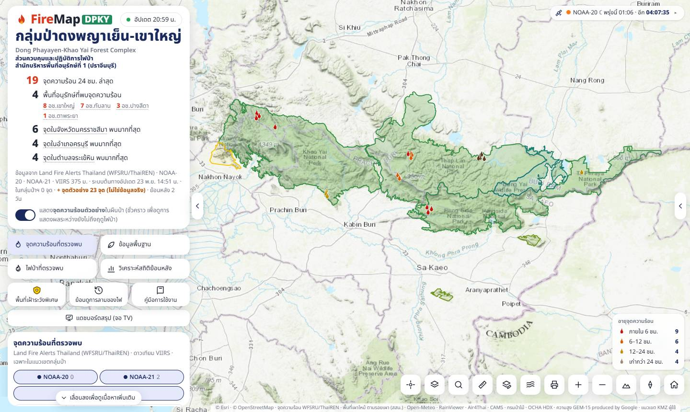
หน้าจอจริง (จุดตัวอย่าง)
เปิดแล้วรู้ทันที
จุด 24 ชม. แยกตามพื้นที่อนุรักษ์ จังหวัด อำเภอ ตำบล
สีบอกอายุจุด
แดง = ใหม่ภายใน 6 ชม. ไล่ถึงน้ำตาล = เกิน 24 ชม.
ดาวเทียมรอบถัดไป
นับถอยหลังเวลาที่ดาวเทียมจะผ่านกลุ่มป่า
สำหรับห้องปฏิบัติการ / ห้องผู้บริหาร
แดชบอร์ดสรุป — เปิดค้างบนจอ TV
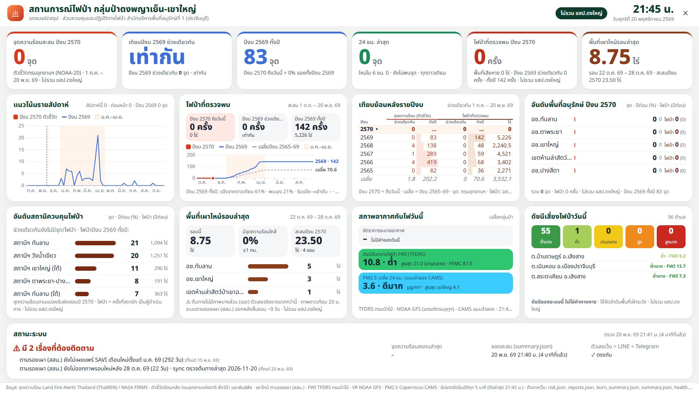
แดชบอร์ดจริง
- สะสมปีงบ เทียบปีก่อน + เฉลี่ย 5 ปี
- ไฟป่าที่ตรวจพบ / ไร่ที่เสียหาย
- อันดับพื้นที่อนุรักษ์ และสถานีฯ
- พื้นที่เผาไหม้รอบล่าสุด
- FWI · การระบายอากาศ · PM2.5 วันนี้
- อัปเดตเองทุก 5 นาที · จอไม่ดับ
เปิดด้วยลิงก์ …/fire-map-dpky/?dash
ข้อมูลย้อนหลังที่ใช้ได้ทันที
5 ปีงบที่ผ่านมา — ไฟไม่เคยเท่ากันสักปี
จุดความร้อน (ตัวชี้วัดกรมฯ) ทั้งปีงบ
ไฟป่าที่ตรวจพบ (ครั้ง) ทั้งปีงบ
พื้นที่เสียหาย (ไร่): 2565 2,271 · 2566 3,402 · 2567 4,521 · 2568 2,240.5 · 2569 5,226 · เฉลี่ย 5 ปี 3,532
ปีงบ 2569 เราทำงานกันอย่างไร
ดาวเทียมคือตาหลัก — เร็วขึ้นได้อีก
61%
ไฟป่าที่รู้จากการแจ้งของดาวเทียม
4.5ชม.
เวลาดับไฟ (มัธยฐาน) รับแจ้ง → ดำเนินการเสร็จ
สถานีฯ ที่ดับไฟมากที่สุด ปีงบ 2569
| สถานีควบคุมไฟป่า | ครั้ง | ไร่ |
|---|
| ทับลาน | 21 | 1,094 |
| วังน้ำเขียว | 20 | 1,251 |
| เขาใหญ่ (ใต้) | 11 | 290 |
| ตาพระยา-ปางสีดา | 8 | 191 |
| ทับลาน (ใต้) | 7 | 363 |
ข้อมูลทั้งหมดนี้ ระบบสรุปให้เอง จากแบบรับแจ้งเหตุที่เจ้าหน้าที่กรอกอยู่แล้ว
ลดงานเอกสาร
รายงาน ตาราง แผนที่ — ไม่ต้องรอคนทำ
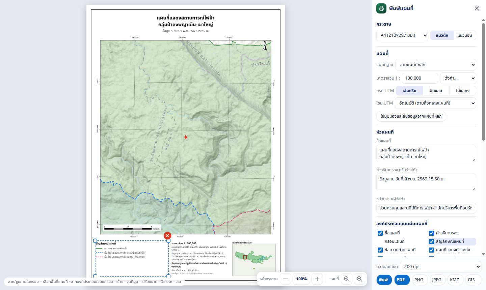
จัดหน้าพิมพ์แผนที่
รายงานประจำเดือน
ระบบสร้างเองทุกวันที่ 1 (HTML / PDF)
ตาราง + ดาวน์โหลด
CSV / Excel / ภาพ ส่งต่อหรือแนบหนังสือได้ทันที
พิมพ์แผนที่
มีกรอบ ทิศเหนือ มาตราส่วน คำอธิบายสัญลักษณ์ จัดวางเองได้
สรุปทุกเช้า 05:30 น.
ส่งเข้ากลุ่มแจ้งเตือนอัตโนมัติ
จากตั้งรับ สู่การป้องกัน
ใช้ข้อมูลวางแผนก่อนไฟมา
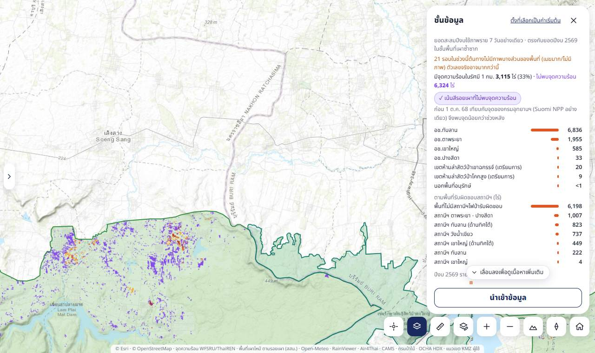
พื้นที่เผาซ้ำซาก
เห็นจุดที่ไหม้ทุกปี → วางแนวกันไฟ ลาดตระเวน ประชาสัมพันธ์ชุมชน
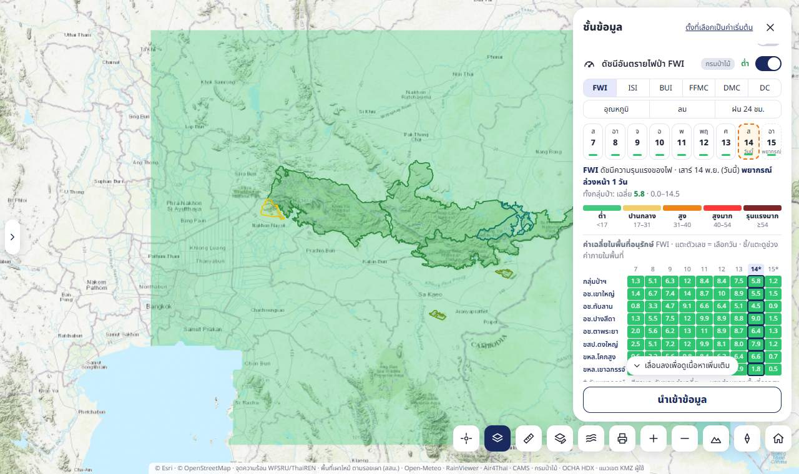
ดัชนีอันตรายไฟ FWI
จากกรมป่าไม้ รายวัน → เพิ่มกำลังเฝ้าระวังวันที่เสี่ยงสูง
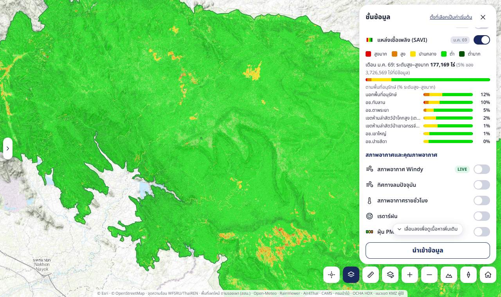
เชื้อเพลิง ชนิดป่า ลาดชัน
ประกอบการจัดลำดับพื้นที่ทำแนวกันไฟ / ชิงเผา
มี ดัชนีเสี่ยงรายตำบล ของระบบช่วยจัดลำดับพื้นที่เฝ้าระวัง (ไม่ใช่ค่าทางการ)
ต้นทุนและความยั่งยืน
ใช้งานได้ทันที โดยไม่มีค่าใช้จ่าย
0บาท
ค่าเซิร์ฟเวอร์ ค่าโปรแกรม ค่าข้อมูล — ใช้บริการฟรี (GitHub Pages, Cloudflare) และข้อมูลเปิดของหน่วยงานรัฐ / NASA
ทำงานเองอัตโนมัติ
ดึงข้อมูลทุก 5 นาที มีระบบเฝ้าตัวเอง — ถ้ารอบไหนหยุด จะสั่งรันใหม่ให้
ข้อมูลเปิด / API
หน่วยงานอื่นดึงข้อมูลไปใช้ต่อได้
สิ่งที่มีข้อจำกัด
- LINE OA ฟรี 300 ข้อความ/เดือน (ตอนนี้ยังเป็นกลุ่มทดสอบ)
- Telegram ไม่จำกัด — ใช้เป็นช่องทางหลักได้
- ระบบดูแลโดยผู้พัฒนาคนเดียว
เริ่มใช้งาน · ขั้นที่ 1
ติดตั้งเป็นแอปบนมือถือ (1 นาที)
Android (Chrome)
1
สแกน QR หรือเปิดเว็บใน Chrome
2
กดเมนู ⋮ → ติดตั้งแอป / เพิ่มลงในหน้าจอหลัก
iPhone / iPad (Safari)
2
กดปุ่ม แชร์ → เพิ่มไปยังหน้าจอโฮม
ได้ไอคอน FireMap บนหน้าจอ เปิดเต็มจอเหมือนแอปทั่วไป
เริ่มใช้งาน · ขั้นที่ 2
รับแจ้งเตือนจุดความร้อน — ไม่ต้องเฝ้าเว็บอีกต่อไป
Telegramกลุ่มแจ้งเตือน
ขอลิงก์เข้ากลุ่มจากผู้ดูแล — เจอจุดใหม่ในแนวเขตจะได้ข้อความรายจุด พร้อมลิงก์ 📍 Google Maps และ 🔥 แผนที่ไฟป่า
Telegram ส่วนตัวเลือกเฉพาะพื้นที่ตัวเอง
แชตกับบอท @Hotspot_dnp1_bot แล้วพิมพ์
/ตาม ทับลาน
/ตาม สถานีวังน้ำเขียว
/ตาม ทั้งหมด
ทุกเช้า 05:30 น.สรุปประจำวัน
ยอด 24 ชม. สะสมปีงบเทียบปีก่อน เวลาดาวเทียมรอบถัดไป FWI ลม และฝุ่นวันนี้
LINE ยังเป็นกลุ่มทดสอบ (โควตาจำกัด)
อ่านแผนที่
สีของจุด = อายุของจุด
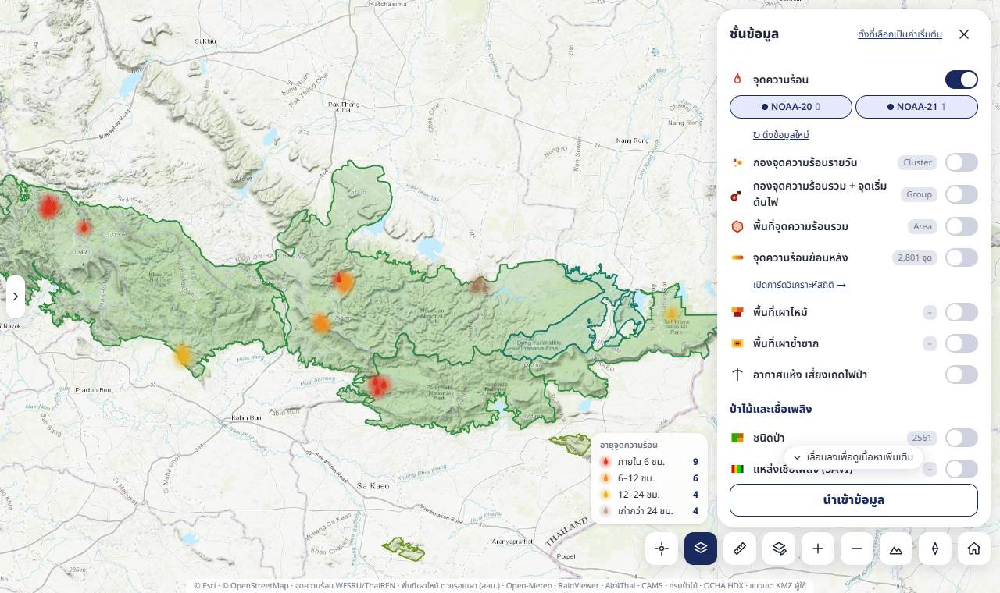
จุดความร้อนบนแผนที่
แดง — ภายใน 6 ชม. รีบดู
ส้ม — 6–12 ชม.
เหลือง — 12–24 ชม.
น้ำตาล — เกิน 24 ชม. (แสดงถึง 48 ชม.)
จุดความร้อน ≠ ไฟป่าเสมอไป อาจเป็นการเผาในที่เกษตร หรือจุดที่ดับแล้ว — ต้องตรวจสอบหน้างาน
กดที่จุด
แตะจุดเดียว รู้ทุกอย่างที่ต้องใช้ตัดสินใจ
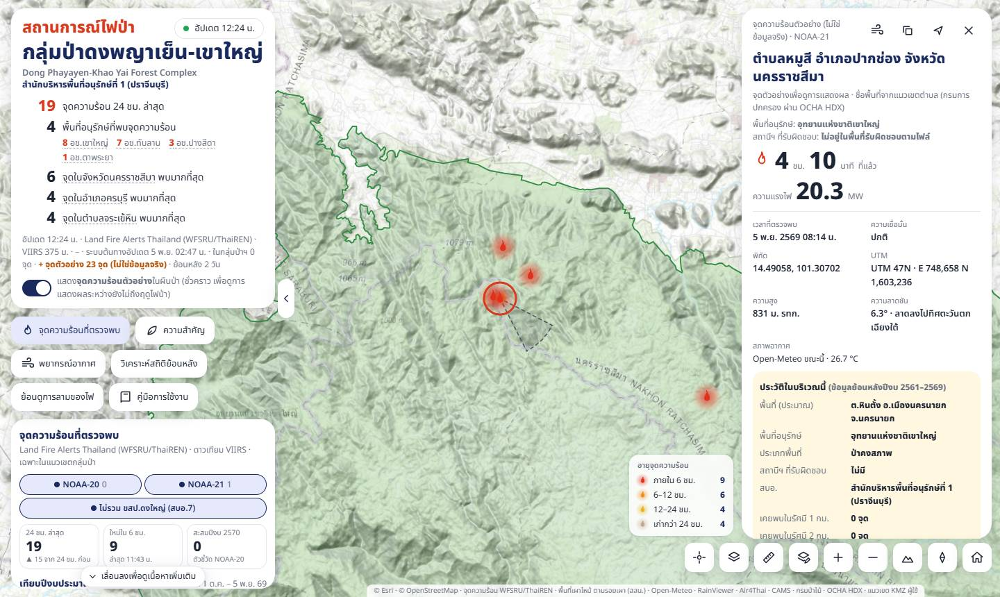
แผงรายละเอียดจุด (จุดตัวอย่าง)
- ตรวจพบกี่ชั่วโมงแล้ว · ความแรงไฟ
- พื้นที่อนุรักษ์ / สถานีฯ ที่รับผิดชอบ
- พิกัด UTM · ความสูง · ความลาดชัน
- อากาศ ลม ฝุ่น ณ จุดนั้น
- ประวัติบริเวณนี้ เคยไหม้กี่ครั้ง
- คาดการณ์ทิศทางการลาม
- ปุ่มนำทาง Google Maps · แชร์ลิงก์
ไปให้ถึงจุด
นำทาง ค้นหาพิกัด และส่งตำแหน่งให้ทีม
นำทาง
กดปุ่มนำทางที่จุด → เปิด Google Maps พาไปถึงพิกัด
ค้นหา
พิมพ์ชื่อสถานที่ หรือพิกัด UTM / ละติจูด-ลองจิจูด แล้วไปที่ตำแหน่งนั้น
ลิงก์ตรง
คัดลอกลิงก์มุมมองหรือจุด ส่งในกลุ่ม → คนรับเปิดแล้วเห็นตำแหน่งเดียวกัน
แตะตำแหน่งใดก็ได้บนแผนที่ → บอก พื้นที่อนุรักษ์ สถานีฯ ที่รับผิดชอบ ตำบล ชนิดป่า พิกัด UTM อากาศ และลิงก์นำทาง
ในป่าไม่มีสัญญาณ
ใช้งานออฟไลน์ได้ — แต่ต้องเตรียมก่อนออก
ใช้ได้เมื่อไม่มีสัญญาณ
- แนวเขตพื้นที่อนุรักษ์ / สถานีฯ
- จุดความร้อนชุดล่าสุดที่เคยโหลด
- การ์ดและสถิติย้อนหลัง
- ชั้นข้อมูลที่เคยเปิดดูแล้ว
- บันทึกเส้นทางด้วย GPS
- แผนที่ฐานที่เก็บไว้ล่วงหน้า
ใช้ไม่ได้
- จุดความร้อนรอบใหม่
- ภาพดาวเทียม / แผนที่ธรรมชาติ
- อากาศ เรดาร์ ที่ดึงสด
ก่อนออกพื้นที่ทุกครั้ง
① เปิดแอปตอนมีสัญญาณ
② ซูมไปพื้นที่ที่จะไป → แผงชั้นข้อมูล → ⬇ เก็บพื้นที่นี้ไว้ดูออฟไลน์
บันทึกการปฏิบัติงาน
บันทึกเส้นทางเดินด้วย GPS
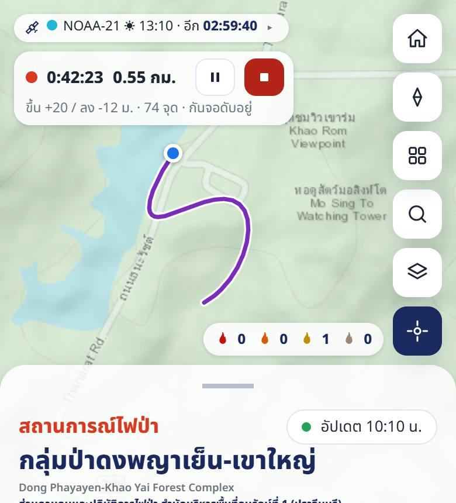
ระหว่างบันทึก
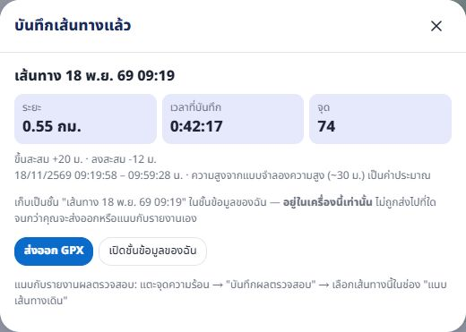
สรุปเมื่อจบ
- ระยะทาง เวลา ขึ้น/ลงสะสม
- ใช้ได้แม้ไม่มีสัญญาณ (GPS ไม่ใช้เน็ต)
- บันทึกต่อได้ถ้าแอปถูกปิดกลางทาง
- ส่งออกเป็นไฟล์ไปใช้ต่อ / แนบรายงาน
ต้องเปิดจอไว้ระหว่างบันทึก
เครื่องมือหน้างาน
วัดระยะ พื้นที่ และดูโปรไฟล์ความสูง
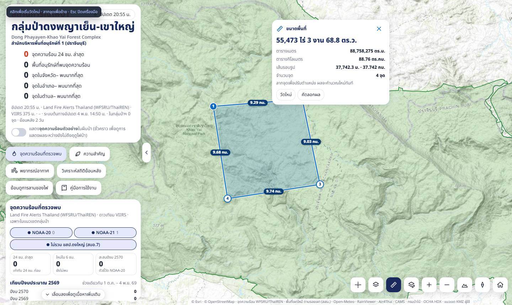
วัดระยะ / พื้นที่ (ไร่)
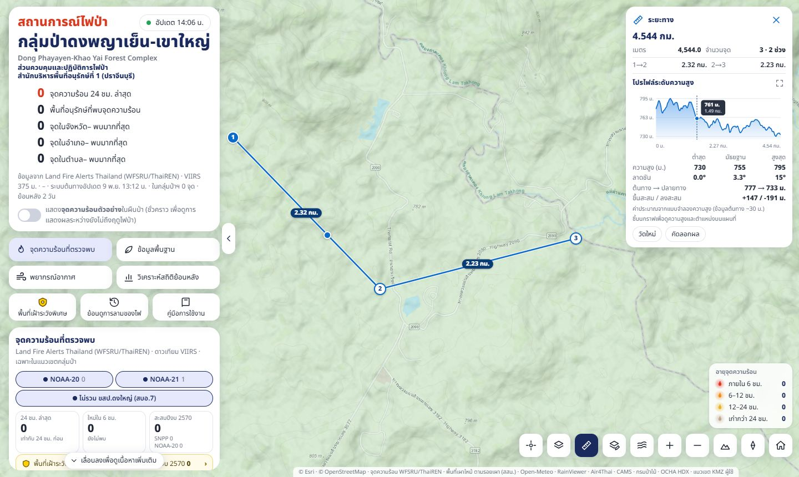
โปรไฟล์ความสูงตามเส้นทาง
ประเมินพื้นที่ไหม้คร่าวๆ เป็นไร่ · ดูว่าทางเข้าชันแค่ไหน · ระยะจากถนนถึงจุดไฟ
ความปลอดภัย
ภูมิประเทศ: ลาดชัน ทิศลาด เส้นชั้นความสูง
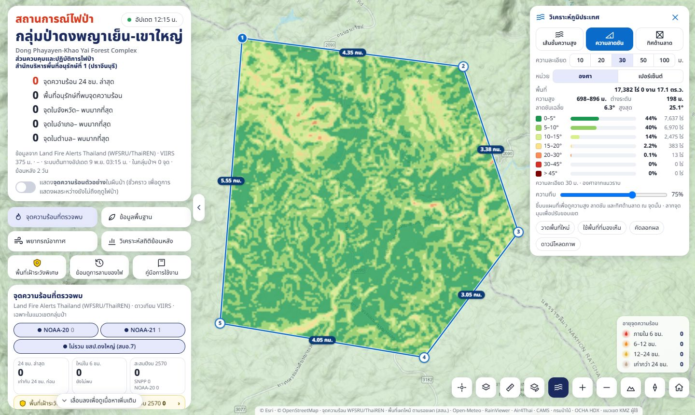
ความลาดชัน
ไฟลามขึ้นเนินเร็วกว่า
ดูความลาดชันและทิศทางลมก่อนเลือกทางเข้า / จุดตั้งแนวดับ
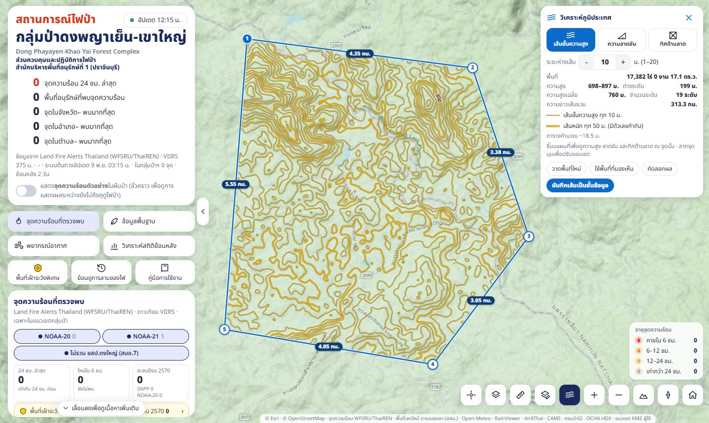
เส้นชั้นความสูง
ทำงานเป็นทีม
วาดบนแผนที่ แล้วแชร์ให้ทีม
วาด
จุดนัดพบ แนวกันไฟ แนวดับไฟ พื้นที่ไหม้ ใส่ชื่อและสีได้
แชร์
ส่งเป็นลิงก์ให้ทีม — เปิดแล้วเห็นสิ่งที่วาดบนแผนที่เดียวกัน
นำเข้า / ส่งออก
KML / KMZ / GeoJSON / GPX ใช้ร่วมกับ Google Earth และโปรแกรม GIS
ก่อนออกปฏิบัติงาน
ลม อากาศ ฝุ่น ดัชนีไฟ — ดูที่เดียว
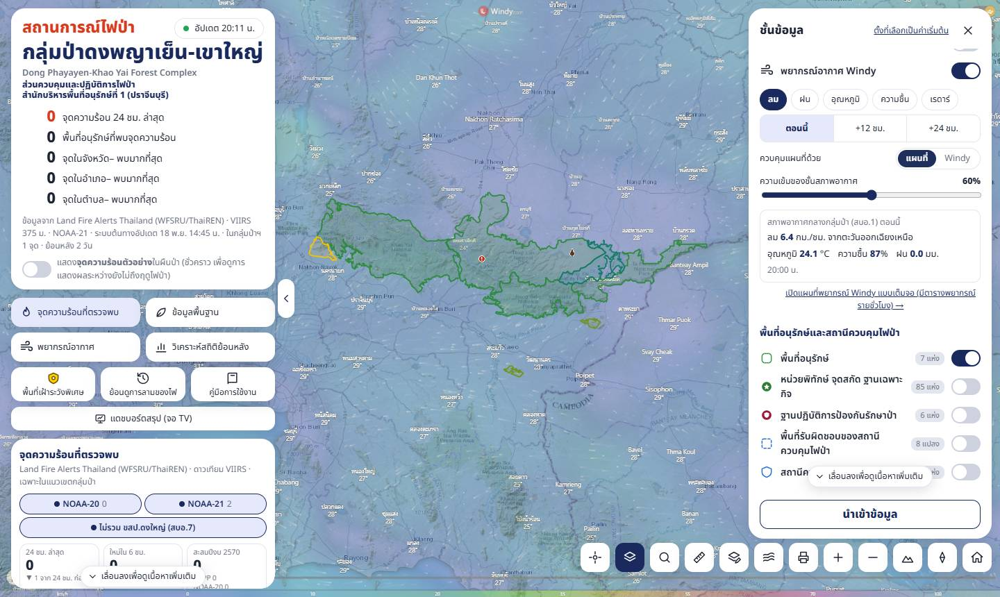
ลมและพยากรณ์อากาศ
ลม / พยากรณ์รายชั่วโมง
ทิศและความเร็วลม ฝน เรดาร์ ภาพเมฆ Himawari
ดัชนีอันตรายไฟ FWI
กรมป่าไม้ รายวัน 5 ระดับ
การระบายอากาศ / PM2.5
ช่วงเวลาที่ควัน “ระบายได้” และค่าฝุ่นรายพื้นที่
หลังดับไฟเสร็จ
กรอกแบบรับแจ้งเหตุของกรมฯ ตามปกติ — ไม่ต้องกรอกซ้ำ
เจ้าหน้าที่กรอก
แบบรับแจ้งเหตุไฟป่า กรมอุทยานฯ (Google Forms)
ระบบดึงเอง
ทุก ~15 นาที เฉพาะในกลุ่มป่า
ขึ้นแผนที่ + แดชบอร์ด
สถิติ อันดับ ไร่ที่เสียหาย
ยิ่งกรอกครบ ข้อมูลยิ่งมีค่า
ช่อง พื้นที่เสียหาย (ไร่) เวลาดับเสร็จ พิกัด และ ตรงกับ Hotspot หรือไม่ คือสิ่งที่ผู้บริหารใช้ดูผลงาน
ปลอดภัยข้อมูลส่วนบุคคล
ระบบไม่ดึงชื่อผู้กรอก อีเมล เบอร์โทร — อ่านเฉพาะข้อมูลเหตุการณ์
แผ่นพกติดตัว · พิมพ์แจกได้
5 ขั้น เมื่อมีจุดความร้อน
1
ได้รับแจ้งเตือน Telegram / LINE → กดลิงก์ 🔥 แผนที่ไฟป่า
2
แตะจุด ดูอายุจุด ความแรง พื้นที่รับผิดชอบ ประวัติบริเวณนี้
3
ประเมิน ลม ความลาดชัน ทางเข้า ทิศทางการลาม
4
ออกไป กดนำทาง + เปิดบันทึกเส้นทาง GPS
5
ดับเสร็จ กรอกแบบรับแจ้งเหตุกรมฯ ให้ครบ (ไร่ / เวลา / พิกัด)
บอกกันตรงๆ
สิ่งที่ระบบนี้ ไม่ใช่ และข้อจำกัด
จุดความร้อน ≠ ไฟป่าทุกจุด
อาจเป็นการเผาในที่เกษตร หรือไฟที่ดับแล้ว — ต้องมีคนตรวจสอบหน้างานเสมอ และดาวเทียมมองไม่เห็นใต้เมฆหนา / ไฟเล็กมาก
ดัชนีเสี่ยงไม่ใช่ค่าทางการ
ใช้จัดลำดับพื้นที่เฝ้าระวังเท่านั้น · การคาดการณ์การลามเป็นค่าประมาณ
ขึ้นกับแหล่งข้อมูลต้นทาง
ถ้าต้นทางหยุดหรือช้า (เช่น ภาพพื้นที่เผาไหม้) ระบบจะช้าตาม — มีป้ายบอกเวลาข้อมูลล่าสุดทุกชั้น
เสริม ไม่ได้แทนช่องทางกรมฯ
ตัวเลขตัวชี้วัดอิงกรมอุทยานฯ · การรายงานทางการยังเป็นไปตามระบบของกรมฯ ระบบนี้ช่วยให้หน้างานรู้เร็วขึ้น
ข้อเสนอต่อที่ประชุม
สิ่งที่ขอ และก้าวต่อไป
ขอให้ที่ประชุมพิจารณา
1
ให้ทุกพื้นที่อนุรักษ์และสถานีฯ ใช้ FireMap ควบคู่ช่องทางของกรมฯ ในฤดูไฟนี้
2
หัวหน้าสถานีฯ และชุดปฏิบัติการ เข้ากลุ่มแจ้งเตือน Telegram / สมัคร /ตาม พื้นที่ตัวเอง
3
กรอกแบบรับแจ้งเหตุกรมฯ ให้ครบทุกช่อง (ไร่ เวลาดับเสร็จ พิกัด)
4
มอบผู้รับผิดชอบสำรองดูแลระบบ และนำเข้าข้อมูล Excel กรมฯ ทุกปีงบ
5
พิจารณาขยาย LINE จากกลุ่มทดสอบ (โควตาฟรี 300 ข้อความ/เดือน)
ก้าวต่อไป (แผน)
- แอป Android
- ขยายการแจ้งเตือนรายพื้นที่
- ตรวจความแม่นยำดัชนีเสี่ยงหลังจบฤดูไฟ
- รับข้อเสนอแนะจากผู้ใช้งานจริง
ขอบคุณครับ
เริ่มใช้ได้
ตั้งแต่วันนี้
สแกน → ติดตั้ง → รับแจ้งเตือน
ซักถาม / ข้อเสนอแนะ: ส่วนควบคุมและปฏิบัติการไฟป่า สบอ.1 (ปราจีนบุรี)